A baked or fried chicken fillet stuffed with cheese and ham for your enjoyment.
Ingredients and Substitutions
Chicken - Use chicken breasts for this recipe.
Cheese - Swiss cheese is most classically used, but any hard cheeses are fine.
Ham - Any good deli ham will work. For Halal version, you can use beef or turkey ham.
Flour - Use all-purpose flour in this chicken cordon bleu.
Milk - Whole milk is great for this dish. For lactose intolerant, you can use other milk types.
Eggs - Large eggs are what I used.
Breadcrumbs - You can use any breadcrumbs, but I prefer plain or homemade and season myself.
For the Chicken Cordon Bleu:
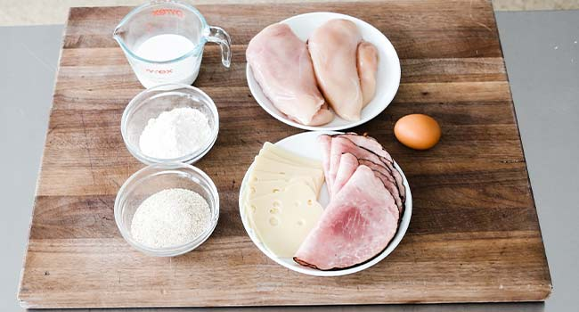
½ cup all-purpose flour
½ cup milk
1 large egg
1 cup breadcrumbs
2 large chicken breasts
4 slices of ham or prosciutto
6 slices of Swiss cheese or gruyere, cut in half
salt and pepper to taste
Oil for frying
For the Optional Sauce:
1 heaping tablespoon all-purpose flour
1 ½ cups chicken stock
1 tablespoon unsalted butter
Salt and pepper to taste
Instructions
Start by assembling your standard breading procedures ingredients beginning by whisking together flour with salt and pepper in a shallow bowl.
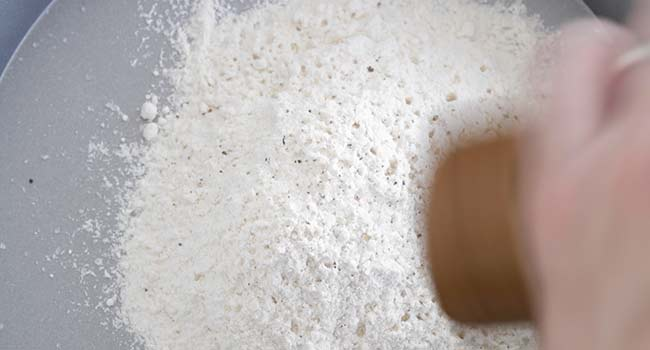
Whisk together flour with salt and pepper in a shallow bowl.
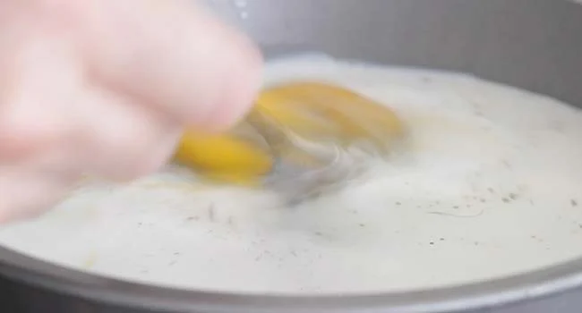
Next, whisk together an egg with milk, salt, and pepper in a separate shallow bowl.
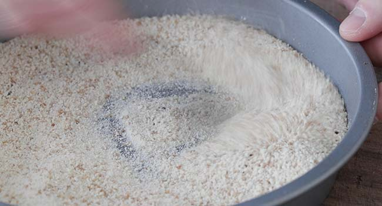
In another shallow bowl whisk together breadcrumbs with salt and pepper and set aside.
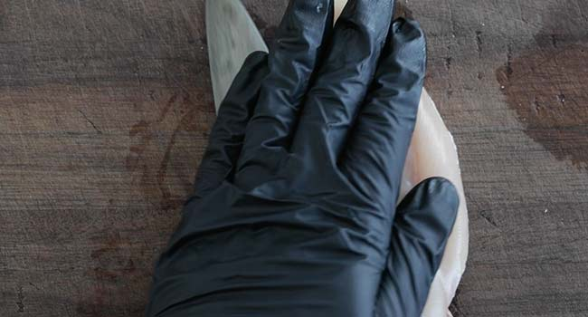
Slice the chicken breasts in half widthwise.
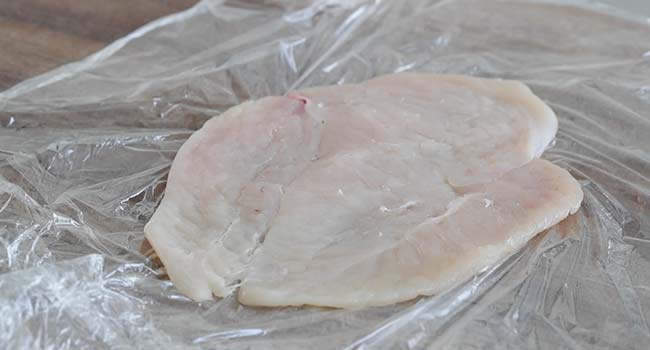
Pound the chicken breast out gently until it is has essentially doubled in size or is about a ¼ to 1/3” thick.
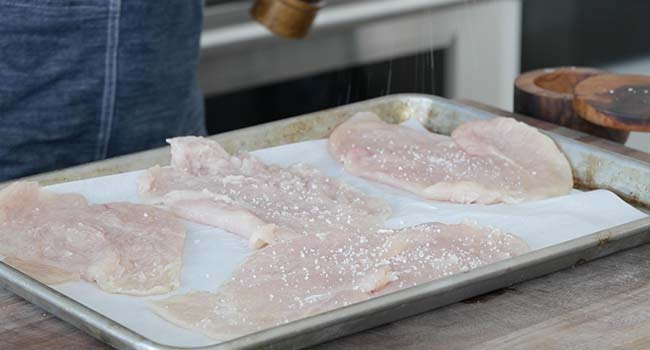
Season the chicken with salt and pepper.
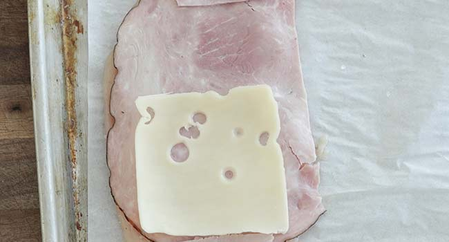
Layer on a slice of ham and then 3 half slices of Swiss cheese.
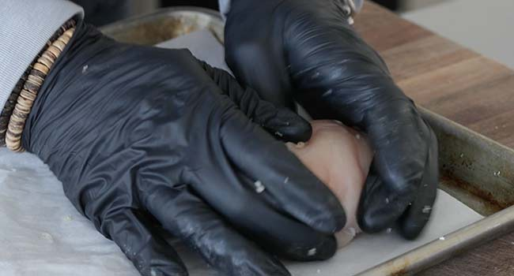
Fold in the sides slightly and then roll the chicken forward making sure the ingredients stay inside and are enclosed inside. Repeat until all the chicken is stuffed.
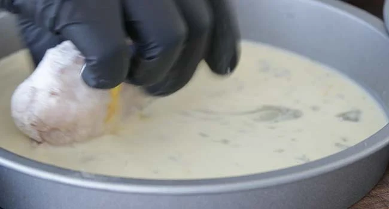
Lightly coat the chicken roll in the flour and pat off any excess and then dredge in the egg wash on all sides.
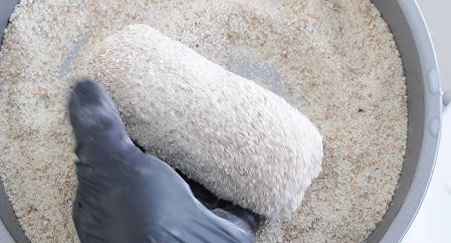
Coat completely in the breadcrumbs and repeat until all the chicken is coated.
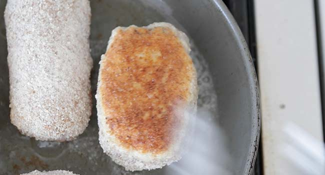
Fry the chicken cordon bleu minutes in about a ¼ cup of neutral flavored oil in a non-stick skillet over medium heat for 3 to 4 on all sides or until golden brown and cooked throughout when reading 165° F internally. See chef notes.
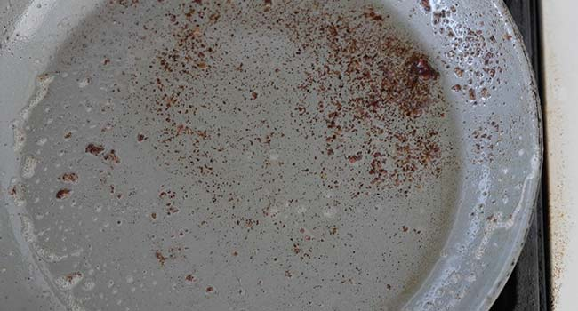
Remove the chicken and discard all but 2 tablespoons of the frying oil.
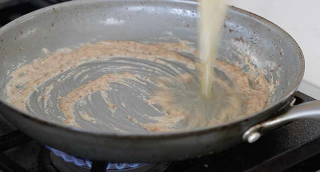
Whisk in the flour until combined and then pour in the chicken stock.
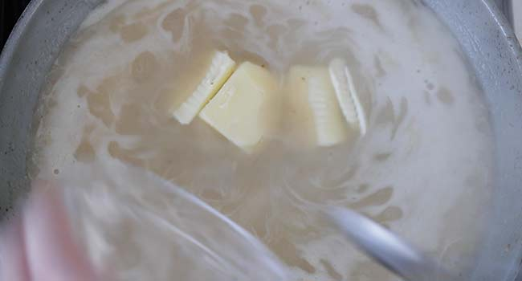
Cook on high heat until thick and then finish with butter, salt, and pepper.
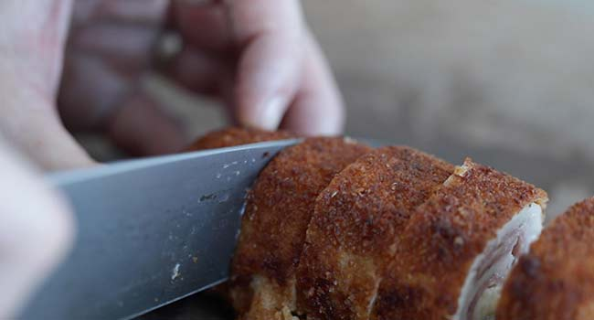
Slice and serve with the simple pan gravy.
Notes and Recommendations
You can use dark thigh meat and pound it out thin, although the finished product will certainly be smaller.
If the ham happens to be larger, just simply trim it down until it is the size of the chicken.
Other great cheeses would be comté or gruyere.
Substitute ham with prosciutto for a more intense flavor.
You may need to add more oil to the pan while frying to ensure it is cooked on all sides.
If the chicken begins to brown too quickly, turn the heat down to medium-low.
Notes and Recommendations